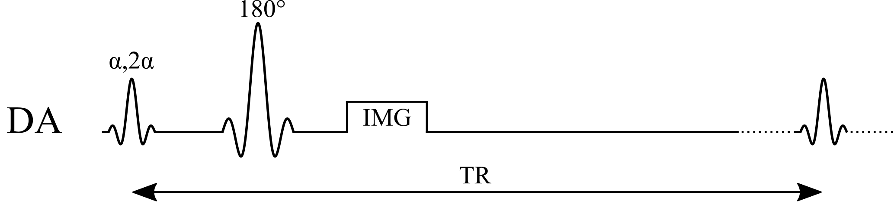
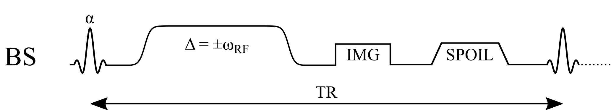

qMRI mOOC · Chapter 4
B1 Mapping
Double angle · Actual flip angle imaging · Bloch–Siegert
What is a B1 map?
- The amplitude of the transmit RF field (B1+) in each voxel: the flip angle you get is B1 × the flip angle set at the scanner
- Units vary: normalized (1 = as set), flip angle (°), µT, or transmitter volts
- Not a tissue property: the coil’s field, shaped by the body loaded in it (Sled & Pike 1998); up to ±30% across the head at 3 T
Three families of B1 mapping in the mOOC, one example each:
Colours
Show
A B1 map of a brain at 3 T (axial slice).
Recovery-based
Double angle method (DAM)

Two images, at α and 2α; their ratio gives the actual flip angle:
$$B_1 = \frac{1}{\alpha}\arccos\left(\frac{S_{2\alpha}}{2\,S_{\alpha}}\right)$$
Example values
| α / 2α | 60° / 120° |
|---|
Assumptions
- TR ≫ T1 (≈ 5 T1): full Mz recovery before each excitation
- Same TE, receive coil and M0 in both images (they cancel in the ratio)
- Uniform flip angle through the slice (ideal slice profile)
- Actual α < 90° (magnitude images can’t tell cos α’s sign)
Benefits
- Simple: a ratio of two magnitude images from a standard sequence
- Spin echo: insensitive to B0 and T2*
Pitfalls
- Slow: the long TR means minutes per slice, so usually only a few slices
- A shorter TR, or 2D slice profiles, bias B1
- Low precision where the actual α is small (cos α is flat near 0°)
Steady-state
Actual flip angle imaging (AFI)

Spoiled gradient echo with two interleaved TRs; r = S2/S1, n = TR2/TR1:
$$B_1 = \frac{1}{\alpha}\arccos\left(\frac{r\,n-1}{n-r}\right)$$
Example values
| α | 60° |
|---|---|
| TR1 / TR2 | 20 / 100 ms (n = 5) |
Assumptions
- The pulsed steady state is reached
- Perfect spoiling: no transverse magnetization before each pulse
- TR1, TR2 ≪ T1 (the first-order approximation behind the equation)
- Same α and TE for both signals (M0 and T2* cancel in r)
Benefits
- Fast 3D: a whole-brain B1 map in a few minutes
- Short TRs, yet nearly insensitive to T1
Pitfalls
- Incomplete spoiling biases B1: needs large spoilers plus tuned RF spoiling
- Large spoilers lengthen TR2 and push gradient limits
- Often needs a custom sequence on the scanner
Phase-based
Bloch–Siegert (BS)

An off-resonance pulse shifts the phase by KBSB12; scans at ±ωRF cancel everything else:
$$B_1 = \sqrt{\frac{\phi_{+}-\phi_{-}}{2\,K_{BS}}}$$
Example values
| BS pulse | Fermi, 8 ms, ±4 kHz |
|---|---|
| KBS | 74 rad/G² (set by the pulse) |
Assumptions
- Pulse far off resonance: no excitation, and the phase shift scales as B12
- KBS known from the pulse shape
- All other phase (B0, coil, chemical shift) identical at ±ωRF
- φ+ − φ− doesn’t wrap; no motion between the two scans
Benefits
- Phase-based: insensitive to T1, TR and the excitation flip angle
- Fast: seconds per slice
Pitfalls
- High SAR from the long off-resonance pulse, which limits TR and pulse power
- Low precision at low B1: the phase grows as B12
- The pulse lengthens TE (more T2* signal loss)